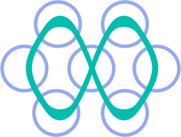
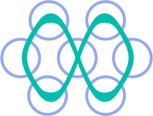

The Semiconductor and Microelectronics Industry. Keeping Up With Recent Improvements Like Extreme Ultraviolet Lithography.

Atomistic Molecular Dynamics (MD) Simulations & First Principle Density Functional Theory (DFT) Modelling.
The Semiconductor and Microelectronics Industry. Keeping Up With Recent Improvements Like Extreme Ultraviolet Lithography.
 

Machine Learning in Python for Applications in Materials Informatics. Specifically for Predicting Material Properties.
About Me!

I'm Jovin Ryan Joseph, a sophomore studying Chemical Engineering at Texas A&M University - College Station.
I am also a member of the Texas A&M Corps of Cadets in Sq-11. As such, I get to spend a lot of time actively engaged in a student led "leadership laboratory" and learn from
great leaders from the U.S. millitary.
I also actively engage in a variety of learning opportunities on campus. Above everything, I am driven by a love for learning and find myself doing things not normally expected from a chemical engineer.
I often find myself juggling multiple side projects, trying to learn a dozen new skills.
As for the future, I plan on attending graduate school after graduating and working in R&D, furthering cutting edge technology.

I believe joining the Corps of Cadets has been one of the best decisions I ever made. I can confidently say that this experience allowed me to develop more than anythin else in my life. The people I met, the friends I made, everyone has made the past year deeply memorable. My beloved mentor (pictured alongside me) as well as the rest of my upperclassmen helped me push through my limits and come out a more well-rounded person and a better leader. I can't wait to see what else the Corps has in store for me. I am also greatly looking forward to taking on more responsibilities as a leader and developing even further.
My Projects

.png)
Education
Bachelor's of Science - B.Sc Chemical Engineering
GPA: 4.0
Expected Graduation: May 2026
University Honors
Kappa Phi Gathright Dean's Excellence Award Semi-Finalist
Aggie Research Scholar
Phone: (979) 326-4849
Email: jovinryanj@tamu.edu
LinkedIn: https://www.linkedin.com/in/jovinryanjoseph/